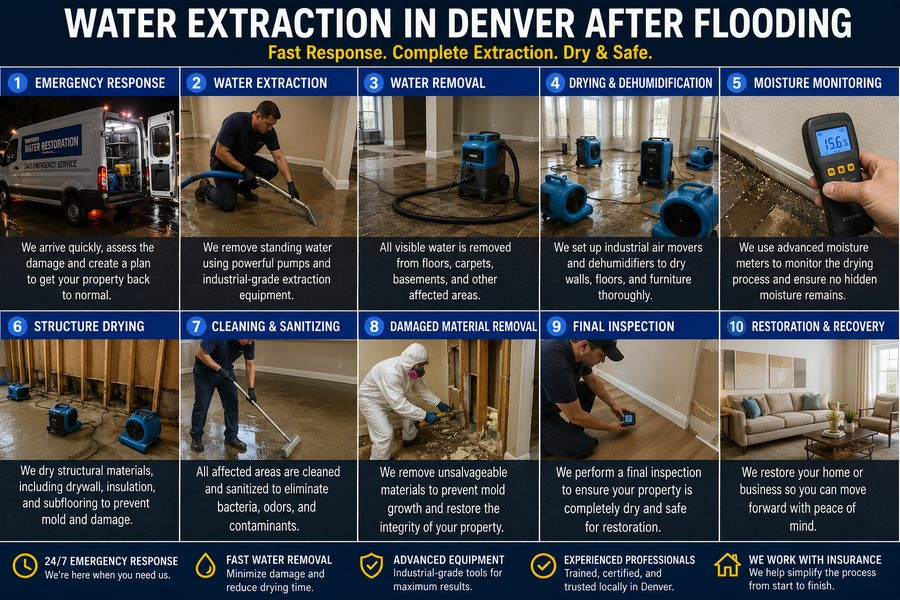

Standing water in a basement, crawl space, or ground floor is a time-sensitive emergency. Every hour water sits, it penetrates deeper into flooring, framing, drywall, and structural materials — dramatically increasing the cost and scope of recovery. Mold can begin developing within 24 to 48 hours of a flooding event. Fast extraction is not just about comfort; it is about limiting damage before it compounds.
Jet Force provides 24/7 emergency water flood extraction for homes and businesses throughout the Denver metro. Whether the source is a burst pipe, sewer backup, flash flood, failed sump pump, or appliance failure, we respond quickly, extract all standing water, and document the affected area so you have a clear record for insurance purposes and repair contractors.

How Water Extraction Works
When you call, we dispatch a crew with professional extraction equipment. On arrival, we assess the source and extent of the water intrusion, then begin extraction immediately. We use truck-mounted or portable submersible pumps depending on the situation and volume, rapidly removing all accessible standing water from the affected space.
After extraction, we survey the area for water penetration into flooring, walls, and substructures and document everything photographically. If the source is a drain or sewer backup, we address the underlying plumbing issue to prevent recurrence. We provide a thorough written report of affected areas and cooperate fully with your insurance adjuster or restoration contractor.
Signs You Need This Service
- Visible standing water in basement, crawl space, or ground-floor areas
- Sewer or drain backup causing water to surface inside the property
- Burst or failed pipe leaving water pooled on floors or in walls
- Sump pump failure during or after heavy rainfall
- Flash flood water entering through foundation walls or window wells
- Water intrusion from a neighboring property or shared drainage system
Why Choose Jet Force
Water emergencies do not wait for business hours, and neither do we. Jet Force maintains a 24/7 emergency response line for flood extraction calls — not an answering service that schedules for the following morning. Our crew arrives equipped and ready to extract immediately upon arrival.
We are transparent about what we find. If the water intrusion is related to a drain or sewer issue, we identify and address the root cause so the problem does not repeat. No down payment is required before work begins, and we provide full documentation to support your insurance claim. Our goal is to get your property dry and give you the clear information you need to move forward.